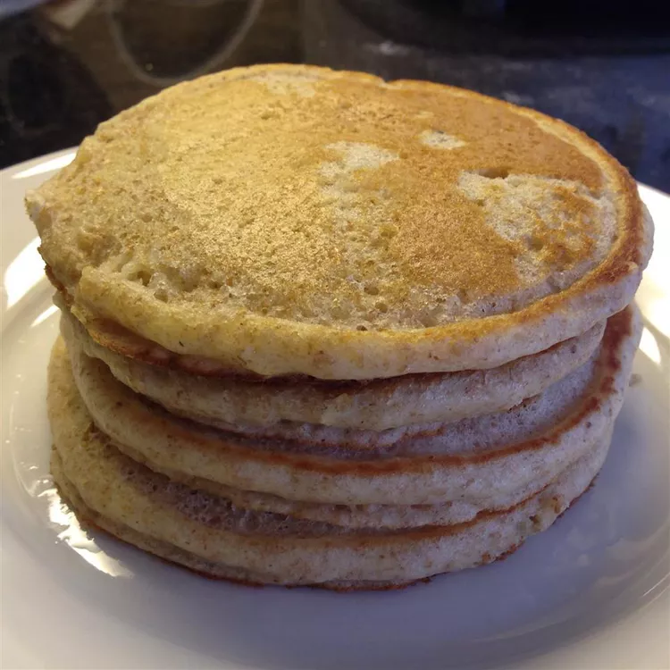

100% Whole Wheat Pancakes

Description
These 100% Whole Wheat Pancakes are a wholesome and delicious breakfast option that you can enjoy any day of the week.
Packed with fiber and nutrients, they provide a hearty start to your morning. Easy to make and perfect for the whole family,
these pancakes are light yet filling, giving you the energy you need to kickstart your day. Serve them with your favorite
toppings such as fresh fruit, maple syrup, or yogurt for a truly delightful experience!
Ingredients
- 1 cup whole wheat flour
- 1 tablespoon baking powder
- ½ teaspoon salt
- 1 tablespoon sugar (optional)
- 1 cup milk (or a milk alternative)
- 1 large egg
- 2 tablespoons melted butter or vegetable oil
- 1 teaspoon vanilla extract (optional)
Steps
- In a large mixing bowl, whisk together the whole wheat flour, baking powder, salt, and sugar (if using) until well combined.
- In a separate bowl, mix the milk, egg, melted butter or oil, and vanilla extract (if using) until smooth.
- Pour the wet ingredients into the dry ingredients and stir until just combined. Be careful not to overmix; a few lumps are fine.
- Heat a griddle or non-stick skillet over medium heat and lightly grease it with cooking spray or butter.
- Pour 1/4 cup of the batter onto the hot griddle for each pancake. Cook until bubbles form on the surface, about 2-3 minutes.
- Flip the pancakes and cook for an additional 2-3 minutes or until golden brown.
- Remove from the heat and keep warm while you repeat with the remaining batter.
- Serve warm with your favorite toppings.